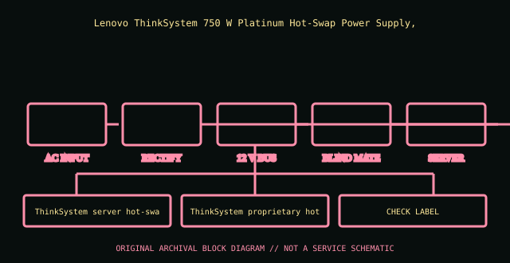

[ POWER CONVERSION // IDENTIFIED MODEL ]
Lenovo ThinkSystem 750 W Platinum hot-swap PSU (7N67A00883)
Lenovo ThinkSystem 750 W Platinum Hot-Swap Power Supply, option 7N67A00883. This entry covers the specific model or bounded historical system assembly identified here; suffixes and supplier revisions are not presumed equivalent.

HIGH-VOLTAGE SAFETY: Disconnect mains before external inspection. Never open a PSU. Internal capacitors can retain dangerous charge after disconnection. Do not probe or repair its interior; use qualified service or replace it.
Model-specific ratings & fit
| Manufacturer identity | Lenovo ThinkSystem 750 W Platinum Hot-Swap Power Supply, option 7N67A00883 |
|---|---|
| Form factor / generation | ThinkSystem server hot-swap redundant PSU |
| AC input | 100–240 V AC input; consult Lenovo platform/FRU label for current/derating. |
| DC output | 750 W output class; 12 V primary server bus, standby/output table is system PSU documentation specific. |
| Dimensions / mounting | ThinkSystem proprietary hot-swap module; only specified chassis and power cage. |
| Connectors | AC inlet and blind-mate proprietary power distribution interface, not ATX. |
| Revision distinctions | 7N67A00883 is a 750 W Platinum module option; check platform support and airflow direction by machine type. |
Compatibility & safe handling
- Verify full model, suffix, region and revision using the actual unit nameplate and matching manufacturer manual. Wattage and plug shape alone do not establish compatibility.
- Check AC input range, rail and combined output limits, derating, signaling/pinout, cooling direction, mounting and system qualification before installation.
- PSU modular-side cables are model-specific. Never reuse an unapproved lead; a matching plug can carry a different pinout.
- Server hot-plug is permitted only in qualified host configurations and under the host’s documented redundancy/live-service procedure.
- Never open or internally probe the supply. Retire damaged, wet, burnt, corroded, modified or unidentified units.
Revision & archival notes
7N67A00883 is a 750 W Platinum module option; check platform support and airflow direction by machine type.
Archive Lenovo option/FRU, machine type, PSU label and the ThinkSystem power-supply matrix; only replace under supported redundant procedure.
Photograph the full nameplate, model/FRU, supplier, revision/date code, line selector, cable ends, mounting orientation and source-document issue. Keep observed label data separate from test results.
Manufacturer or primary references
- Lenovo ThinkSystem 750 W Platinum hot-swap PSU (7N67A00883) — manufacturer/product or primary technical referenceLenovo ThinkSystem 750 W Platinum Hot-Swap Power Supply, option 7N67A00883. Check the exact revision, region and system support information.
- Intel ATX / ATX12V Power Supply Design GuideReference for desktop ATX context only. Proprietary historical and hot-swap server outputs are not made interchangeable by ATX standards.
The specific PSU nameplate and corresponding model/service documentation remain controlling.